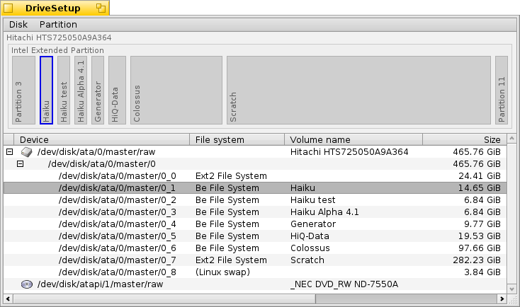
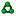

DriveSetup
DriveSetup
| Deskbar: | ||
| Ścieżka: | /boot/system/apps/DriveSetup | |
| Ustawienia: | ~/config/settings/DriveSetup |
DriveSetup jest narzędziem do tworzenia, usuwania i formatowania partycji. Obecnie nie potrafi przesuwać partycji ani zmieniać ich rozmiaru, więc do pracy potrzebny jest nierozpartycjonowany nośnik (np. zewnętrzny napęd USB lub inny dysk twardy). W innym razie należy użyć narzędzia takiego jak GParted LiveCD, aby przygotować miejsce dla kolejnej partycji.
At the top is a graphical representation of all partitions inside the device chosen in the list below it. Each device, by default, can hold a maximum of 4 primary partitions. This limit can be removed by making one of those an extended partition, which in turn can hold theoretically an unlimited number of logical partitions (practical limitations depend on, for example, other OSes installed).
You may have to expand such a list with the +/- widget that appears in that case in front of that device to see the details of every logical partition.
Colors and icons provide some more information about the available volumes and partitions.
Besides the familiar icons for harddisks, CD drives and USB sticks etc., there are a few that indicate a their mount mode:
| The /boot partition | ||
| An encrypted partition | ||
|  | A partition shared through SMB/NFS etc. | |
| A partition that was mounted read-only | ||
| A mounted image file (see also the diskimage command) |
When mounted, a colored bar shows the used space of a partition. The color depends on the kind of partition:
| A BFS formatted partition | ||
| A non-BFS formatted partition | ||
| A read-only partition | ||
| An encrypted partition |
You can select a partition and choose various commands from the context or menu, like /, or to .
You can also or completely a partition.
 Initializing a disk
Initializing a disk
If you don't plan to use just one of the partitions of a larger disk, but the entire drive as one partition, e.g. a USB stick or a Compact Flash card, you'll have to initialize the disk first.
You do this by selecting the raw disk from list of devices and choose a partition map from the menu. The is the right choice for classical booting via a BIOS.
Tworzenie nowej partycji
Kiedy już znajdziesz niesformatowane miejsce na dysku, takie jak powyższe <puste>, możesz stworzyć nową partycję korzystając z (ALT C).

Zostanie otwarte powyższe okno dialogowe, które pozwala dostosować rozmiar oraz typ partycji. Wybierz jeśli chcesz użyć partycji do zainstalowania Haiku lub chcesz używać na niej wszystkich ciekawych funkcjonalności systemu, takich jak zapytania i atrybuty. Pamiętaj że inne systemy operacyjne mogą nie mieć dostępu do takich partycji.
The checkbox is only available if you have created a primary partition instead of just another logical partition within an extended one. You'll have to tick that checkbox if you plan to use that partition to boot a Haiku installation.
Before you can use, or even mount the newly created partition, it has to be formatted with a filesystem.
Formatting a partition
Only unmounted partitions can be formatted by choosing a filesystem from the sub-menu of . The (BFS) is mandatory for a Haiku boot partition and recommended for data partitions to be used with Haiku. Only BFS formatted partitions can be queried and fully support Haiku's file attributes.

W powyższym oknie ustawia się nazwę partycji i rozmiar bloku. 2048 bajtów na blok jest ustawieniem zalecanym, ale możesz wybrać mniejsze lub większe rozmiary, jeśli masz specyficzne potrzeby.
Inicjacja zniszczy wszystkie dane na partycji!